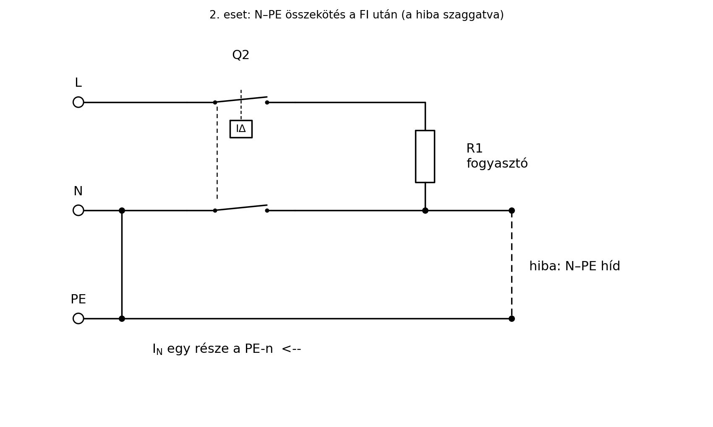
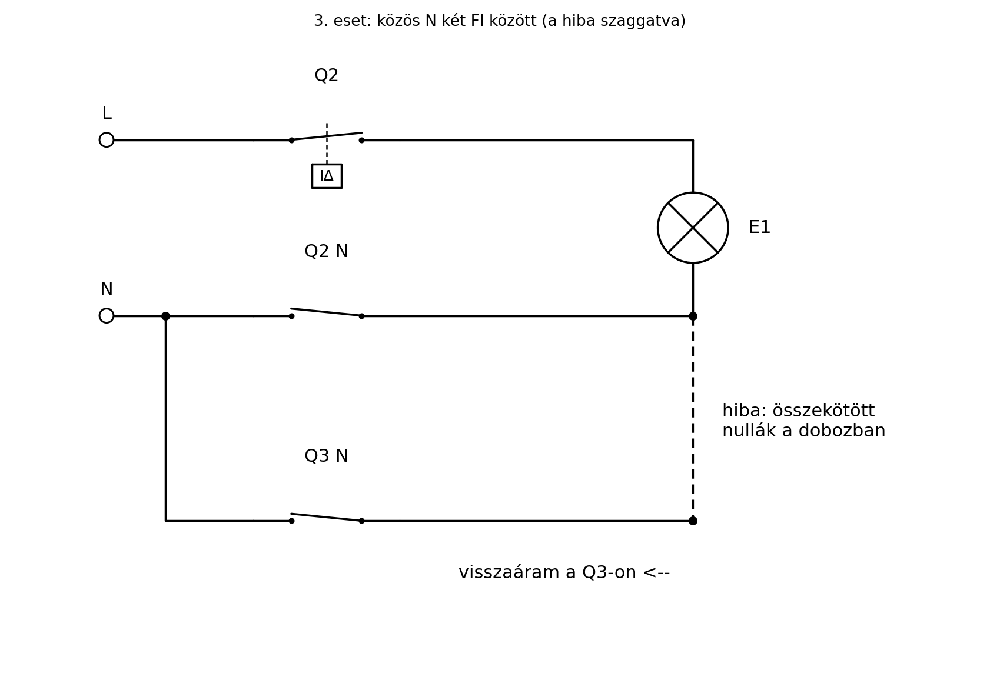

A kapcsolódó elmélet: tankönyv, 24.4 alfejezet.
A legveszélyesebb hibák a nulla- és a védővezetőben rejtőznek: a tünet félrevezető, és csak a mérési eredmények mintázata vezet a hibához.
Biztonsági korlát. Hálózati hibakeresést csak jogosult, arra képesített személy végezhet; tanulóként felügyelettel vagy tanműhelyi modellen vegyél részt. Minden mérés és bontás előtt az öt biztonsági szabály: lekapcsolás, visszakapcsolás elleni biztosítás, feszültségmentesség ellenőrzése, földelés és rövidre zárás (ahol a munkamódszer előírja), a szomszédos feszültség alatti részek lefedése. A feszültség alatti méréseket (feszültség, hurok, FI) csak a műszer előírt módján végezzük.
Tünet. Egyes lámpák feltűnően fényesek, mások halványak; egy hálózati tápegység tönkrement.
| Mérés | Érték |
|---|---|
| / / | 301 / 151 / 260 V |
| vonali feszültségek | 398–401 V (szimmetrikus) |
Hipotézis. A vonali feszültségek épek, a fázis–nulla feszültségek szétcsúsztak: a fogyasztói csillagpont eltolódott (a példaadatok kb. 87 V-os eltolódásnak felelnek meg) – N-szakadás, lásd Háromfázisú teljesítmény, aszimmetria és a nullavezető (tankönyv, 7.3). Azonnali teendő. Lekapcsolás (az érzékeny fogyasztók veszélyben vannak). Ellenőrző mérés feszültségmentesen: az N folytonossága a főelosztó N-sínjétől a betáplálásig, a PEN-szétválasztás kötése. Ok: meglazult N-kötés a szétválasztásnál. Javítás: a kötés javítása nyomatékkal. Ellenőrzés: 229 / 231 / 230 V. Jegyzőkönyvi sor: „N-kötés a PEN-szétválasztásnál laza; előtte 301/151/260 V, javítás után 229/231/230 V.” Mit nem szabad: a fogyasztókat „visszakapcsolva kipróbálni” a javítás előtt.
Tünet. A FI terhelésre (mosógép, vízforraló) kiold, terhelés nélkül nem; a próbagomb jó.
| Mérés | Érték |
|---|---|
| N–PE szigetelés a FI utáni körön | 0,0 MΩ |
| L–PE szigetelés | > 200 MΩ |
| FI, | nem old ki |
Hipotézis. A terhelőáram nulla-oldali része a PE-n, a FI megkerülésével folyik vissza (a vizsgálóáram egy része pedig az N-en jön vissza a FI-n). Ellenőrző mérés: feszültségmentesen, aljzatonként bontva N–PE szigetelés. Ok: egy aljzatban „nullázás” hagyományából N–PE híd. Javítás: a híd eltávolítása. Ellenőrzés: N–PE > 200 MΩ, FI : 28 ms. Jegyzőkönyvi sor: „X aljzatban N–PE áthidalás; előtte N–PE 0,0 MΩ, utána > 200 MΩ, FI 28 ms.” Mit nem szabad: a FI-t kisebb érzékenységűre (pl. 300 mA-esre) cserélni.

Tünet. A Q3 FI kiold (sokszor a Q2-vel együtt), amikor a Q2 alatti világítást bekapcsolják.
| Mérés | Érték |
|---|---|
| Q3 alatt, világítás ki | nincs kioldás |
| folytonosság az N1 és N2 sín között (Q2, Q3 ki, körök leválasztva) | 0,2 Ω – összekötött |
Hipotézis. A két FI-csoport N-vezetője egy kötődobozban össze van kötve: a lámpa árama L-ként a Q2-n megy ki, nullaként részben a Q3 N-pólusán tér vissza, mindkét FI különbségi áramot lát. Ellenőrző mérés: feszültségmentesen dobozonként bontva keresd az összekötést. Ok: kötődobozban egy sorkapocsra kötött két kör N-je. Javítás: minden kör saját N-je a saját FI-jének N-sínjére. Ellenőrzés: N1–N2 szakadás (OL), mindkét FI-n a világítás és a terhelések kioldás nélkül. Jegyzőkönyvi sor: „Q2/Q3 közös N a 3. dobozban; szétválasztva, N1–N2 OL, FI-mérés megfelelő.” Mit nem szabad: a két N-sínt „a biztonság kedvéért” összekötni, vagy a FI-t kiiktatni.

Tünet. Semmi: minden működik. A hurokmérő a fürdőszobai aljzaton „PE hiányzik / magas” jelzést ad.
| Mérés | Érték |
|---|---|
| a fürdőaljzatig | ∞ (szakadás) |
| a javítás után / | 0,14 Ω / 0,71 Ω |
Kockázat. Testzárlatnál a burkolat fázisfeszültségre kerül, a kismegszakító nem old ki; csak a FI véd. Hipotézis: szakadt PE egy kötésnél. Ellenőrző mérés: szakaszonként, felezéssel. Ok: kötődobozban kicsúszott PE-ér. Javítás: a kötés helyreállítása. Ellenőrzés: a táblázat javítás utáni értékei; FI-vizsgálat. Jegyzőkönyvi sor: „Fürdőaljzat PE-szakadás (D2 doboz) – életveszélyes; javítva, 0,14 Ω, 0,71 Ω.” Mit nem szabad: a hibát „a FI úgyis véd” indokkal üzemben hagyni.
A FI-kioldásos esetek a fenti döntési fa (tankönyv, 24.4) „közös N” és „N–PE összekötés” leveleihez kapcsolódnak.
Cél: Tanműhelyi modellen gyakorold a mérési jegyzőkönyv kitöltését és egy szándékosan beépített hiba azonosítását.
Eszközök és anyagok: - Tanműhelyi elosztómodell FI-relével, kismegszakítóval, pár fogyasztóval és mérési pontokkal (törpefeszültségű vagy leválasztott, oktató által felügyelt környezet). - Szigetelési ellenállásmérő, multiméter, hurokimpedancia-mérő (a modellhez illesztett vagy szimulált mérési lehetőség). - Mérési jegyzőkönyv-formanyomtatvány (papíron vagy elektronikusan). - Alapkapcsolási rajz a mérési pontok megnevezésével. - Egyéni védőeszközök, zárt munkaterület.
Biztonsági korlát. A feladat tanműhelyi (törpefeszültségű) környezetre vagy jogosult oktató felügyeletére vonatkozik; hálózati feszültségen önállóan ne végezd. A hurokimpedancia- és FI-mérések valós hálózaton feszültség alatt történnek, ezért azokat kizárólag a hatályos munkavédelmi szabályok szerint, jogosult személy végezheti. A tanműhelyi gyakorlatban a modell mindig feszültségmentes legyen, kivéve, ha az oktató kifejezetten feszültség alatti mérést engedélyez.
Az öt biztonsági szabály a mérés megkezdése előtt: 1. Lekapcsolás (a modell táplálásának megszüntetése). 2. Visszakapcsolás elleni biztosítás (letiltás, kulcs eltávolítása, kitiltó tábla). 3. Feszültségmentesség ellenőrzése (kétpólusú feszültségmérővel a mérési pontokon). 4. Földelés és rövidre zárás (ahol a munkakörnyezet előírja). 5. Szomszédos feszültség alatti részek lefedése (ha van).
A gyakorlat lépései:
Ellenőrzési pontok: - A folytonosságmérésnél a vezeték ellenállása kb. alatt legyen (a modell hosszától függően; szemléltető érték). - A szigetelési ellenállás a javítás után érje el a határértéket (230/400 V-os körnél , ellenőrizendő), és jóval haladja meg a javítás előtti értéket. - A jegyzőkönyvben a hiba oszlopban szerepeljen az eredeti mért érték és a javítás utáni érték is.
Tipikus hibák a gyakorlatban: - A mérési jegyzőkönyvet kitöltik, de a műszer kalibrálási adatait üresen hagyják; ez a jegyzőkönyvet hiteltelenné teheti. - A folytonosságmérést a fogyasztók csatlakoztatott állapotában végzik, ami hamis eredményt adhat; a mérés előtt le kell választani a fogyasztókat. - A javítás utáni ellenőrző mérést elfelejtik, így a jegyzőkönyv nem igazolja a hiba megszűnését.
A válaszokat a ### Megoldások részben találod.
1. feladat (A). Sorold fel a mérési jegyzőkönyv nyolc fő adatcsoportját, és mindegyikhez írj egy konkrét példát.
2. feladat (A). Írd le, mi a különbség az első felülvizsgálat, az időszakos felülvizsgálat és a rendkívüli felülvizsgálat között. Mikor kell rendkívüli felülvizsgálatot végezni?
3. feladat (B). Egy irodai elosztóban a
kismegszakító
B-karakterisztikájú. A mért hurokimpedancia
,
az
.
a) Számítsd ki a zárlati áramot.
b) Állapítsd meg, hogy a
B-kismegszakító kiold-e a számított zárlati áramnál, ha a pillanatkioldó
áram
(feltétel:
,
ahol
).
c) Írd le, hogyan írnád be ezt az eredményt a jegyzőkönyvbe, a
határértékkel együtt.
4. feladat (B). Egy lakásban a FI-relé
érzékenységű, és leold éjszaka. A szerelő leválasztja a mosógép
áramkörét, és a FI-relé már nem old le. A mosógép bekötésénél a
szigetelési ellenállás L–PE között
,
a többi fogyasztói csoportnál
.
a) Melyik hibafajtára utal a jelenség?
b) Milyen további mérést érdemes végezni a mosógép áramkörén?
c) Fogalmazd meg a jegyzőkönyvbe írandó javítási javaslatot.
5. feladat (C). Egy berendezésnél a következő mérési
eredmények születtek:
- Védővezető folytonossága:
- Szigetelési ellenállás L1–PE:
- Hurokimpedancia L1–PE:
- FI-relé kioldási ideje
-nél:
A védőeszközök:
B-kismegszakító, FI-relé
.
a) Értékeld, melyik mérési eredmény nem felel meg, ha a határérték a B16
pillanatkioldó áramából (80 A) számított
(példa) és a FI-relé maximális kioldási ideje
(példa), a szigetelési ellenállás alsó határa
.
b) Javasolj hibakeresési lépéseket a nem megfelelő tételhez.
c) Írd le, mit kellene a jegyzőkönyvbe írni.
6. feladat (D). Tanműhelyi modellen az oktató egy hibát épített be: az egyik sorkapocs csavarja laza, emiatt az adott fogyasztó időnként nem működik, és a sorkapocs melegszik. Tervezd meg a hibakeresési gyakorlatot: milyen tünetet rögzítenél, milyen hipotézist állítanál fel, milyen méréseket végeznél, és hogyan igazolnád a javítás sikerét? Készíts mérési jegyzőkönyv-vázlatot a mért képzeletbeli értékekkel.
7. feladat (C/D) – keresd a 10 hibát. Az alábbi rövidített jegyzőkönyv pontosan tíz hibát tartalmaz. Keresd meg, indokold, és írd le a helyes változatot!
| Rovat | Adat (példaadat) |
|---|---|
| Helyszín | 0000 Példafalva, Gyakorló utca 2.; TN-C-S, 230/400 V |
| Műszer | installációs vizsgáló, gy. sz. 000123; kalibrálás: – |
| Mérés / aláírás kelte | mérés: 2026.05.12.; aláírás: 2026.05.10. |
| Korrekció |
| Kör, védelem, vezeték, | (Ω) | L–PE (MΩ) | mért → korr. (Ω) | (Ω) | Ért. |
|---|---|---|---|---|---|
| K1 B10, 1,5 mm², 30 m | 0,00 | > 200 | 1,08 → 1,30 | 4,60 | megfelel |
| K2 C16, 2,5 mm², 70 m | 0,50 | > 200 | 1,35 → 1,62 | 2,875 | megfelel |
| K3 B16, 2,5 mm², 58 m | 0,41 | > 200 | 1,20 → 1,20 | 2,875 | megfelel |
| K4 B16 kültér, 2,5 mm², 20 m | 0,15 | 0,8 | 0,66 → 0,79 | 2,875 | megfelel |
| K5 B10, 1,5 mm², 18 m | 0,22 | 250 kΩ | 0,80 → 0,96 | 4,60 | megfelel |
| K6 B16 3P, 5×2,5, 11 m | 0,09 | > 200 | L1: 0,53 → 0,64 | 2,875 | megfelel |
| FI | Rámpa | Ért. | |||
|---|---|---|---|---|---|
| Q2 30 mA A | nem old | 22 mA | 0°: 320 ms | 0°: 28 ms | megfelel |
Minősítés: „A berendezés megfelel.” Aláírás: ……
Gyakorló jegyzőkönyv-értékelő. A minősítési döntés (megfelel / nem felel meg / hiányos dokumentáció) csak sok, változatos mérési soron gyakorolható be. A következő gyakorlólap teljes jegyzőkönyvi sorokat ad – egy sorban védelem, kábel, , , a -vel és a határértékkel, FI-rámpa és kioldási idők –, és minden sorhoz a döntést és az okot kérdezi. Az A szinten csak mérési hiba van (hurok, szigetelés, folytonosság, FI-idő, FI-áram), a B és C szinten dokumentációs hiba is: más karakterisztikához tartozó határérték, elmaradt -szorzás, hiányzó mértékegység, hiányzó 180°-os idő, háromfázisú körnél hiányzó fázis, üres szigetelési rovat.
Hogyan használd? A HTML-kiadásban minden sorhoz kiválasztod a minősítést és az okot; az „Ellenőrzés” soronként jelez, a pontszám a körben gyűlik, a „Megoldás lépésenként” soronként megadja a helyes számítást ( a legrosszabb fázissal, a számított , a határok). Az „Új feladat” gomb és a feladatszám új kivonatot ad. Egy sorban legfeljebb egy hiba van – de vajon melyik a súlyosabb: egy nem megfelelő mérés vagy egy hiányzó rovat? Nyomtatásban az alábbi három rögzített kivonat szolgál.
Rögzített feladatsor. Gyakorló jegyzőkönyv-kivonatok (feladatszám 2444, a lap A, B és C szintjén): három kivonat, összesen 15 sor (A: csak mérési hibák; B és C: dokumentációs hibákkal is). Minden sorban legfeljebb egy hiba van. A megoldókulcs és a soronkénti indoklás a sor végén.
Megoldókulcs.
| Feladat | Szint | Feladatszám | Eredmény |
|---|---|---|---|
| 1. | A | 2444 | 1. sor = megfelel; 1. sor oka = – (nincs); 2. sor = nem felel meg; 2. sor oka = hurokimpedancia; 3. sor = megfelel; 3. sor oka = – (nincs); 4. sor = nem felel meg; 4. sor oka = szigetelés |
| 2. | B | 2444 | 1. sor = nem felel meg; 1. sor oka = hurokimpedancia; 2. sor = megfelel; 2. sor oka = – (nincs); 3. sor = nem felel meg; 3. sor oka = szigetelés; 4. sor = nem felel meg; 4. sor oka = FI-áram; 5. sor = hiányos/hibás dokumentáció; 5. sor oka = hiányzó adat |
| 3. | C | 2444 | 1. sor = nem felel meg; 1. sor oka = hurokimpedancia; 2. sor = megfelel; 2. sor oka = – (nincs); 3. sor = nem felel meg; 3. sor oka = szigetelés; 4. sor = nem felel meg; 4. sor oka = FI-áram; 5. sor = hiányos/hibás dokumentáció; 5. sor oka = rossz határérték; 6. sor = hiányos/hibás dokumentáció; 6. sor oka = hiányzó adat |
Kidolgozott megoldások.
Önellenőrzés – válaszok
Feladatok megoldásai
1. feladat (A). A nyolc adatcsoport a fent leírtak szerint, példákkal: 1. Felülvizsgáló azonosítása: „Kiss István, villanyszerelő mester, nyilvántartási szám …”. 2. Berendezés azonosítása: „Lakásfőelosztó, Budapest, Minta utca 1., II/4., TN-C-S rendszer”. 3. Mérőműszerek: „Fluke 1664 FC, gy. sz. 123456, kalibrálás érvényes 2027-01-31, CAT III 600 V”. 4. Mérési időpont és körülmények: „2025.05.10., 14:30, 22 °C, 45% páratartalom”. 5. Mérési eredmények és határértékek: „Hurokimpedancia 0,62 Ω, határérték ≤ 2,875 Ω (B16), megfelel”. 6. Minősítés: „Megfelel”. 7. Megjegyzések: „Az elosztó ajtaján hiányzó felirat, pótolandó”. 8. Aláírás, azonosító: „Aláírás, 1/2. oldal”.
2. feladat (A). Első felülvizsgálat: új létesítés vagy átalakítás után, üzembe helyezés előtt. Időszakos: meghatározott időközönként, a kockázattól függően. Rendkívüli: baleset, tűz, üzemzavar, villámcsapás, vagy a biztonságot befolyásoló változás után. Rendkívüli kell például akkor, ha a FI-relé ismétlődően leold, és a hiba oka ismeretlen.
3. feladat (B).
a)
.
b)
,
tehát
,
a kismegszakító pillanatkioldója kiold.
c) Jegyzőkönyvbe: „Hurokimpedancia (L–PE): 0,45 Ω; számított zárlati
áram: 511 A; védőeszköz: B16 MCB, pillanatkioldó: 80 A; feltétel: 511 A
≥ 80 A; értékelés: megfelel.” A határértéket is fel lehet tüntetni:
(példa, ellenőrizendő).
4. feladat (B).
a) Szigetelési hiba.
b) A mosógép áramkörén feszültségmentes állapotban további szigetelési
mérést kell végezni, például L–N és N–PE között is, és a mosógép belső
vezetékét, motorját, fűtőbetétjét ellenőrizni. A kötődobozt és a
mosógépet külön-külön kell mérni (a fogyasztó leválasztásával), hogy
kiderüljön, a hiba csak a mosógépben van-e, vagy a kötődobozban.
c) Jegyzőkönyvbe: „A mosógép áramkörének szigetelési ellenállása L–PE
között 0,2 MΩ, ami a határérték alatt van (230 V-on ez csak kb. 1,2 mA,
ezért a kioldás azt jelzi, hogy éjszaka, párásodáskor vagy vezérelt
áramú üzemben a szigetelés tovább romlik, vagy más szivárgásokkal
összegződik). Javaslat: a mosógép bekötését és a fogyasztót
javítani/cserélni, majd ellenőrző mérést végezni.”
5. feladat (C).
a) A szigetelési ellenállás L1–PE = 2,1 MΩ ≥ 1 MΩ, tehát megfelel. A
védővezető folytonossága 0,6 Ω viszonylag magas, de ha a vezeték hosszú,
elfogadható; a határértéket a körülmények döntik el (ebben a példában
nincs megadva). A hurokimpedancia 1,8 Ω ≤ 2,875 Ω (B16: 230/80), a
zárlati áram 230/1,8 ≈ 128 A ≥ 80 A, tehát megfelel (a
Mérések II.: hurokimpedancia, zárlati áram, FI-vizsgálat (tankönyv,
24.3) alfejezet 1,3-as hőmérsékleti tényezőjével is 2,34 Ω ≤ 2,875 Ω). A
FI-relé kioldási ideje 220 ms ≤ 300 ms, tehát megfelel.
b) A hurokimpedancia megfelel, de a 0,6 Ω-os védővezető-folytonosság és
a 2,1 MΩ-os szigetelés (a 230/400 V-os határ 1 MΩ, de a tartalék kicsi)
figyelmet érdemel: ellenőrizni kell a kötéseket, a védővezető
folytonosságát, a nulla és PE viszonyát; szakaszonként mérni. (Ha a
védőeszköz C16 lenne, 1,8 Ω > 1,4375 Ω miatt nem felelne meg.)
c) A jegyzőkönyvbe: „Hurokimpedancia L1–PE: 1,8 Ω; határérték (B16):
2,875 Ω; értékelés: megfelel; megjegyzés: a 0,6 Ω-os
védővezető-folytonosság és a 2,1 MΩ-os szigetelés a kötések ellenőrzését
indokolja.”
6. feladat (D).
Tünet: a fogyasztó időnként kimarad, a sorkapocs környezete meleg, enyhe
szag. Hipotézis: laza kötés. Mérések: feszültségmentes állapotban a
sorkapocs két oldala között átmeneti ellenállásmérés (nagy árammal vagy
mikroohmmérővel), a fogyasztói áramkör folytonossága; feszültség alatt
(jogosult személy) feszültségesés mérése a kötés két pontján. Javítás: a
csavar meghúzása a megadott nyomatékkal, vagy a sorkapocs cseréje.
Ellenőrző mérés: a folytonosságmérés értéke a javítás előtti
-ról
alá csökken; a fogyasztó feszültsége visszaáll. Jegyzőkönyv-vázlat:
„Hiba típusa: laza sorkapocs; mért átmeneti ellenállás javítás előtt:
0,8 Ω; javítás után: 0,05 Ω; fogyasztói feszültség: 230 V; értékelés:
megfelel.”
7. feladat (C/D) – megoldókulcs.
| Sz. | Hiba | Miért hiba | Helyesen |
|---|---|---|---|
| 1 | üres kalibrálási rovat | a mérés nem igazolható, a jegyzőkönyv hiteltelen | érvényes kalibrálás dátuma |
| 2 | K2 (C16): = 2,875 Ω | ez a B16 értéke | C16: 1,4375 Ω; az 1,62 Ω-mal nem felel meg |
| 3 | K3: korrigált = mért (1,20) | a fejléc szerinti 1,2-es szorzó elmaradt | 1,44 Ω (B16-ra megfelel) |
| 4 | FI : 320 ms, „megfelel” | a tanulási határ 300 ms | nem felel meg, FI csere, újramérés |
| 5 | K4 L–PE 0,8 MΩ, „megfelel” | 230 V-os körnél legalább 1 MΩ (ellenőrizendő) | nem felel meg, hibakeresés |
| 6 | K1 = 0,00 Ω | 30 m 1,5 mm²-nél a számított 0,35 Ω; nem mért vagy rossz pontot mért érték | újramérés (kb. 0,35–0,4 Ω) |
| 7 | K5: „250 kΩ” a MΩ oszlopban, „megfelel” | mértékegység-keveredés: 0,25 MΩ < 1 MΩ | nem felel meg |
| 8 | K6: csak L1 hurokimpedancia | háromfázisú körnél minden fázis kell | L1, L2, L3 külön sorban |
| 9 | FI: csak 0° | a 180°-os mérés hiányzik, hiányos vizsgálat | 0° és 180° is |
| 10 | aláírás kelte korábbi a mérésénél | a dokumentum nem lehet hiteles | helyes keltezés a mérés után |
Példa. Egy háromfázisú lakáselosztónál a jegyzőkönyvben szereplő sorok:
| Mérés | Mért érték | Határérték / feltétel | Értékelés |
|---|---|---|---|
| Védővezető folytonossága | a számított vezetőellenállás nagyságrendje (példa) | megfelel | |
| Hurokimpedancia L–PE | ; 16 A B-karakterisztikájú MCB-nél (példa, ellenőrizendő) | megfelel | |
| Szigetelési ellenállás L-N | (példa, ellenőrizendő) | megfelel | |
| FI-relé kioldási ideje mellett | hálózati feszültségű áramkörben (példa, ellenőrizendő) | megfelel |
A táblázatban a határértékeket jelölni kell, hogy azok szemléltető értékek, mert a konkrét szabványok és a gyártói adatok eltérhetnek.